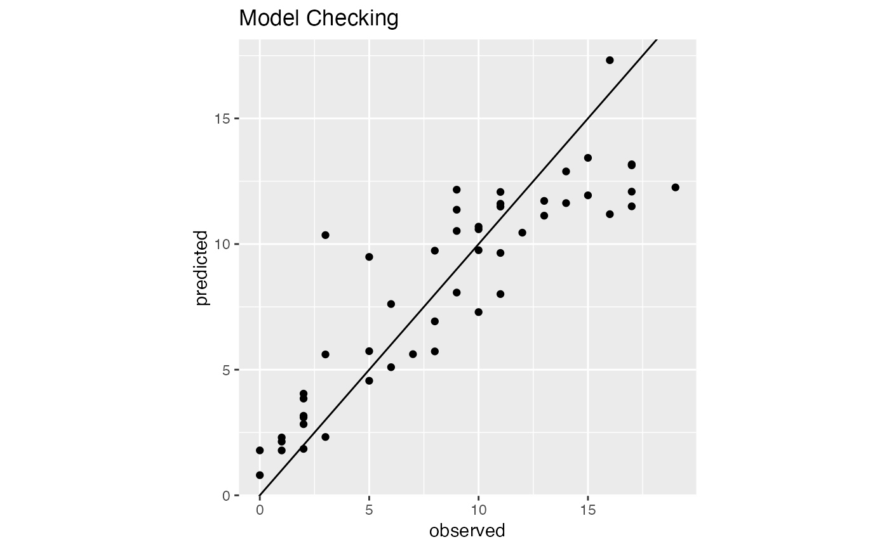
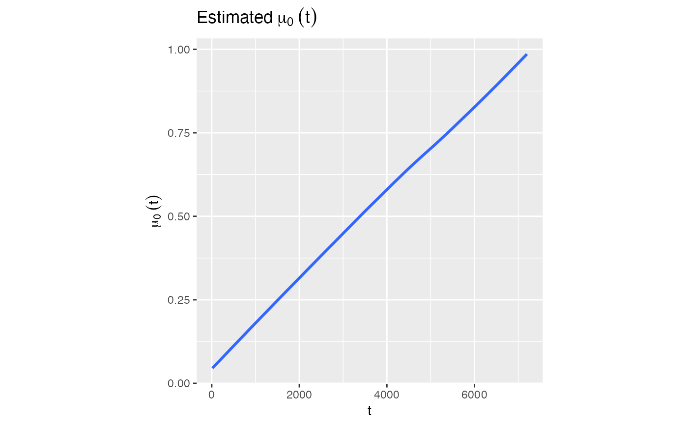
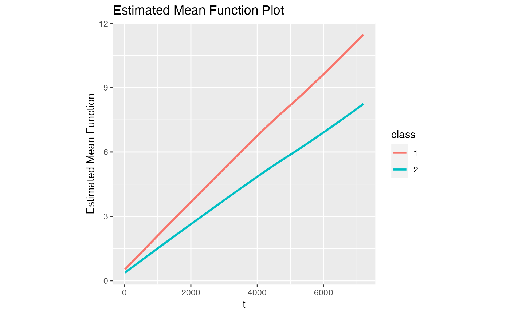

Conduct Semiparametric Latent Class Analysis for Recurrent Event.
Usage
SLCARE(
alpha = NULL,
beta = NULL,
dat,
K = NULL,
gamma = 0,
max_epoches = 500,
conv_threshold = 0.01,
boot = NULL
)Arguments
- alpha
initial values for alpha for estimation procedure. This should be NULL or a numberic matirx. NULL means obtain initial value with k-means.
- beta
initial value for beta for estimation procedure. This should be NULL or a numberic matirx. NULL means obtain initial value with k-means.
- dat
a data frame containing the data in the model
- K
number of latent classes
- gamma
individual frailty. 0 represents the frailty equals 1 and k represents the frailty follows gamma(k,k)
- max_epoches
maximum iteration epoches for estimation procedure
- conv_threshold
converge threshold for estimation procedure
- boot
bootstrap sample size
Value
A list containing the following components:
- alpha
Point estimates for alpha
- beta
Point estimates for beta
- convergeloss
Converge loss in estimation procedure
- PosteriorPrediction
Posterior prediction for observed events for subjects of interest
- EstimatedTau
Posterior probability of latent class membership
- ModelChecking
Plot for model checking
- Estimated_mu0t
Plot for estimated mu0(t)
- est_mu0()
A function allows to calculate mu0(t) for specific time points
- Estimated_Mean_Function
Plot of estimated mean functions
- RelativeEntropy
Relative entropy
- InitialAlpha
Initial alpha for estimation procedure
- InitialBeta
Initial beta for estimation procedure
If argument 'boot' is non-NULL, then SLCARE returns two additional components:
- alpha_bootse
Bootstrap standard error for alpha
- beta_bootse
Bootstrap standard error for beta
Examples
data(SLCARE_simdat)
# Example 1: number of latent classes k = 2, default settings, generate initial values in estimation procedure with Kmeans
model1 <- SLCARE(dat = SLCARE_simdat, K=2)
# contents of output
names(model1)
#> [1] "alpha" "beta"
#> [3] "convergeloss" "PosteriorPrediction"
#> [5] "EstimatedTau" "ModelChecking"
#> [7] "est_mu0" "Estimated_mu0t"
#> [9] "Estimated_Mean_Function" "RelativeEntropy"
#> [11] "InitialAlpha" "InitialBeta"
# point estimates
model1$alpha
#> x1 x2
#> class1 0.0000000 0.000000
#> class2 0.2204357 -3.736727
model1$beta
#> (Intercept) x1 x2
#> class1 2.496767 -0.110277 0.1679575
#> class2 3.175178 -0.141808 -5.5362092
# converge loss in estimation procedure
model1$convergeloss
#> [1] 0.008254239
# Posterior prediction
model1$PosteriorPrediction
#> ID PosteriorPrediction
#> 1 UOM054 10.5227224
#> 2 EM015 11.5014781
#> 3 G078 11.4903563
#> 4 UOM048 11.9388759
#> 5 G050 11.1886724
#> 6 G058 3.8500141
#> 7 EM037 5.7373952
#> 8 G052 1.8489939
#> 9 UOM043 2.3018298
#> 10 G064 12.2549101
#> 11 EM036 1.7865768
#> 12 UOM003 7.2927102
#> 13 EM001 9.6461813
#> 14 UOM020 5.6180338
#> 15 G027 6.9236494
#> 16 UOM023 12.1637705
#> 17 UOM051 9.7369634
#> 18 G036 12.0859251
#> 19 G051 13.4306809
#> 20 UOM055 12.0733739
#> 21 G070 5.6079467
#> 22 UOM009 4.5591882
#> 23 G047 10.3564909
#> 24 G007 11.3667516
#> 25 G009 10.5893497
#> 26 G004 2.3224480
#> 27 UOM040 17.3172396
#> 28 EM013 3.1650867
#> 29 G066 1.7884215
#> 30 G021 11.1295757
#> 31 G061 8.0095335
#> 32 UOM031 0.8026416
#> 33 EM044 9.7559038
#> 34 G015 5.7280014
#> 35 EM018 12.8902131
#> 36 UOM050 13.1332526
#> 37 G005 8.0697634
#> 38 G003 10.4539334
#> 39 G018 5.0996630
#> 40 G057 11.7181383
#> 41 G072 11.6051441
#> 42 UOM005 13.1737497
#> 43 G019 4.0456816
#> 44 UOM025 9.4886388
#> 45 G065 2.1372540
#> 46 EM014 10.6922976
#> 47 G079 2.8322107
#> 48 UOM007 3.1004627
#> 49 G048 7.6133885
#> 50 G080 11.6309883
# Posterior probability of latent class membership
model1$EstimatedTau
#> ID class1 class2
#> 1 UOM054 0.999999641 3.588689e-07
#> 2 EM015 0.999999270 7.296420e-07
#> 3 G078 0.998646435 1.353565e-03
#> 4 UOM048 1.000000000 3.410495e-13
#> 5 G050 0.998840723 1.159277e-03
#> 6 G058 0.437239412 5.627606e-01
#> 7 EM037 0.559913306 4.400867e-01
#> 8 G052 0.009863978 9.901360e-01
#> 9 UOM043 0.325872654 6.741273e-01
#> 10 G064 1.000000000 9.013150e-25
#> 11 EM036 0.001336693 9.986633e-01
#> 12 UOM003 0.188217597 8.117824e-01
#> 13 EM001 0.948642553 5.135745e-02
#> 14 UOM020 1.000000000 3.327574e-10
#> 15 G027 0.999976786 2.321358e-05
#> 16 UOM023 0.999999995 5.446992e-09
#> 17 UOM051 0.776284012 2.237160e-01
#> 18 G036 0.714972850 2.850272e-01
#> 19 G051 1.000000000 4.054462e-14
#> 20 UOM055 0.910532662 8.946734e-02
#> 21 G070 0.681826745 3.181733e-01
#> 22 UOM009 0.547115965 4.528840e-01
#> 23 G047 0.359803746 6.401963e-01
#> 24 G007 0.983611339 1.638866e-02
#> 25 G009 0.554658656 4.453413e-01
#> 26 G004 0.055220951 9.447790e-01
#> 27 UOM040 0.319408186 6.805918e-01
#> 28 EM013 0.546855255 4.531447e-01
#> 29 G066 0.012265950 9.877341e-01
#> 30 G021 0.969492976 3.050702e-02
#> 31 G061 0.290533287 7.094667e-01
#> 32 UOM031 0.618818075 3.811819e-01
#> 33 EM044 0.999824606 1.753943e-04
#> 34 G015 0.999977573 2.242684e-05
#> 35 EM018 0.999976933 2.306671e-05
#> 36 UOM050 1.000000000 3.290086e-11
#> 37 G005 0.433093210 5.669068e-01
#> 38 G003 0.702729729 2.972703e-01
#> 39 G018 0.545514459 4.544855e-01
#> 40 G057 0.999999892 1.077511e-07
#> 41 G072 0.612486202 3.875138e-01
#> 42 UOM005 1.000000000 5.818215e-13
#> 43 G019 0.447460375 5.525396e-01
#> 44 UOM025 0.999751903 2.480969e-04
#> 45 G065 0.309831911 6.901681e-01
#> 46 EM014 0.997311331 2.688669e-03
#> 47 G079 0.748248625 2.517514e-01
#> 48 UOM007 0.534013300 4.659867e-01
#> 49 G048 0.221051811 7.789482e-01
#> 50 G080 0.999999626 3.742849e-07
# model checking plot
model1$ModelChecking

# Plot of estimated \eqn(\mu_0 (t)) for all observed time
model1$Estimated_mu0t
#> `geom_smooth()` using method = 'loess' and formula = 'y ~ x'

# Estimated \eqn(\mu_0 (t))
# You may input multiple time points of interest
model1$est_mu0(c(100, 1000, 5000))
#> [1] 0.06086907 0.17089670 0.70936436
# Plot of estimated mean function
model1$Estimated_Mean_Function
#> `geom_smooth()` using method = 'loess' and formula = 'y ~ x'

# Relative entropy
model1$RelativeEntropy
#> [1] 0.5468913
# Initial values for estimation procedure
model1$InitialAlpha
#> x1 x2
#> class1 0.0000000 0.000000
#> class2 -0.4984874 -2.447667
model1$InitialBeta
#> intercept x1 x2
#> class1 2.563970 -0.2441563 0.06202144
#> class2 2.125367 0.0107472 -1.09947581
# You can select initial value in estimation procedure manually
alpha <- matrix(c(0, 0, 0.5, -2, 2, -4), nrow = 3, ncol = 2, byrow = TRUE)
beta <- matrix(c(2.5, -0.5, -0.3, 1.5, -0.2, -0.5, 2.5, 0.1, 0.2), nrow = 3 , ncol = 2+1 , byrow = TRUE)
model2 <- SLCARE(alpha, beta, dat = SLCARE_simdat)
# You can define individual frailty with gamma(p,p). Below is an example with manually defined initial value and frailty gamma(3,3)
model3 <- SLCARE(alpha, beta, dat = SLCARE_simdat, gamma = 3)
# You can use bootstrap for bootstrap standard error. Bootstrap sample size = 100 (time consuming procedure)
# model4 <- SLCARE(alpha, beta, dat = SLCARE_simdat, boot = 100)
# SLCARE() with "boot" argument will return to two additional contents: "alpha_bootse", "beta_bootse" which represent bootsrap standard errors for alpha and beta
# model4$alpha_bootse
# model4$beta_bootse